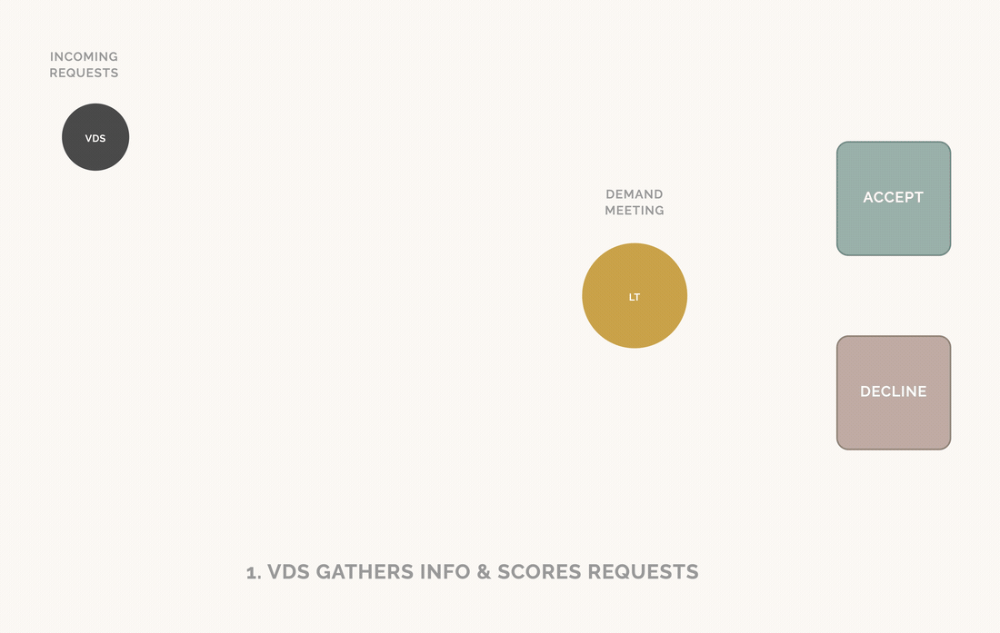

This case study contains confidential details. Enter the password to continue, or email me at evontay.home@gmail.com for access.
2022–2023 | Role: DesignOps Lead
As a newly formed design organisation bringing several subfunctions together for the first time, we had no shared way to see incoming work or evaluate it consistently. We built a rotating squad to fix that: visibility into demand across the practice, and a consistent standard for deciding what was worth doing.

Our design organisation had just been reorganised from regional teams into subfunctions built around specialised competencies. The subfunctions themselves were brand new, with no established ways of working yet, no shared history to draw on for how a request should move or who should own it. Requests arrived from everywhere in the company, but there was no shared way to see them as one picture, let alone evaluate them consistently. Anything unclear or ambiguous fell to whoever on the leadership team had bandwidth: meeting with requesters, running informal stakeholder interviews, piecing together enough context to make a decision.
Two things compounded each other:
The bottleneck wasn't the volume of requests. It was that "figure out if this is worth doing" had no owner, no process, and no consistent standard — so it defaulted to whoever's calendar had a gap.
Rather than centralising discovery in one already-stretched role, I designed a two-tier structure that split the work by commitment level: a dedicated Lead who owned the process end-to-end, and a rotating pool of Members drawn from across the design competencies.
Every new request moved through the same visible pipeline: logged centrally, triaged weekly, and — if it needed more than a form could capture — handed to a paired squad member for structured discovery, capped at four weeks before the squad had to make a call on whether it was worth continuing. Findings were scored against a shared framework spanning both value — user need, business impact, strategic fit — and risk — delivery risk, project risk — then presented back to the leadership team at a standing weekly meeting, so the people with the authority to accept or decline work were seeing consistent, comparable evidence, not whichever leader's notes happened to be most complete. Budget was deliberately not one of the criteria — the framework was built around a single question: where could design have the most impact?
Splitting the role by commitment level — one dedicated coordinator, many rotating contributors — let us staff a demanding, ongoing function without pulling any one person out of their core competency permanently. It also meant domain expertise stayed distributed across the practice instead of pooling in a single discovery specialist.
The most important design decision wasn't in the workflow diagram — it was a rule about what the squad was not allowed to do. Initial stakeholder meetings were for information-gathering only. No pledges, no informal agreements to take on the work, no matter how reasonable the request sounded in the room.
This mattered because the entire premise of the squad was to enable a considered, consistent assessment before any commitment was made. A single well-meaning "yes, we can probably help with that" in an early conversation would have quietly reintroduced the exact problem we were trying to remove: decisions made by whoever was in the room, not by a fair evaluation of the evidence.
Objectivity isn't a personality trait, it's a structural property. Requiring two people in every stakeholder meeting, and banning commitments until scoring was complete, made "stay neutral" the path of least resistance instead of something that depended on individual discipline.
What held up from the pilot:
What changed over the following two years:
A process that can't yet name its own next bottleneck isn't finished, just early. The most useful thing the squad produced in its second year wasn't a higher completion rate — it was clear evidence of exactly where the model stopped scaling, which is what let the organisation move on to solving the right problem next.
A workflow diagram doesn't fix a bottleneck if nobody is accountable for the step that keeps stalling. The squad existed because "gather more information" needed a name attached to it, not just a column on a board.
Keeping discovery and decision-making structurally apart — different meetings, different people, an explicit no-promises rule — protected the evaluation from being quietly shaped by whoever built the best rapport in the room.
A single dedicated specialist doesn't scale and pulls one person permanently out of their craft. An entirely rotating team lacks continuity. Pairing one committed coordinator with a rotating bench of contributors gave us both.
"Score and document 80% of demands" only happened because it was a named metric someone tracked — not because a good process naturally produces good documentation on its own.
One field note follows a single thread further than a project page can: why the scoring framework was built around impact rather than budget, and what it meant when the organisation's own finances turned out to be a metric it had been measuring us against all along.
This work involved close collaboration with leadership and design team members across multiple competencies. Details, names, and tooling have been generalised to protect confidential and proprietary information. The organisation described here no longer exists in this form — it was restructured again in the years since, and most of the people involved have since moved into different roles, teams, or companies entirely.